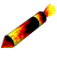
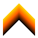

|
Missiles: unguided but fast. If they hit anything (including the
track), they explode impressively. The effect on a Kart is to stop it
dead - so you have to accelerate again from zero. |
|  |
Homing missiles: slower than the regular kind - but they track the nearest kart and are quite hard to shake off. |
|
Fuzzy blob / Spark: even slower still, a kart can
outrun them quite easily. They ricochet off the sides of the track and
only explode when they hit a Kart. Since they are not moving fast,
they'll tend to stay close to where you dropped them, thoughtyou won't know exactly where. |
|  |
Portable Zippers: these are just like the zippers on the
track itself - they give you a sudden acceleration and
temporarily increase the top speed of your kart. |
|
Portable parachutes: this pops out the back of all the karts
in a better position than you and slows them down a for some seconds.
The worse your position is, the higher the probabilities of getting
this you have (but they are stillsmall). You can only have one at a time. |
 |
Portable anvil: the driver in the first position gets
dragged by a heavy anvil, allowing other drivers to catch up with
him... like the portable parachutes, the worse your position is, the
higher probabilities of getting this you have. However, you can't get
this if the driver in the first position alreadyfinished the race, and you can't have more than one at a time. |